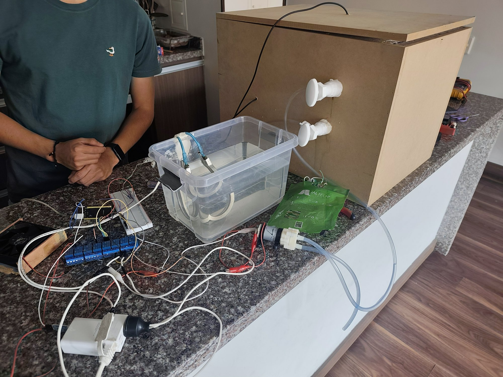
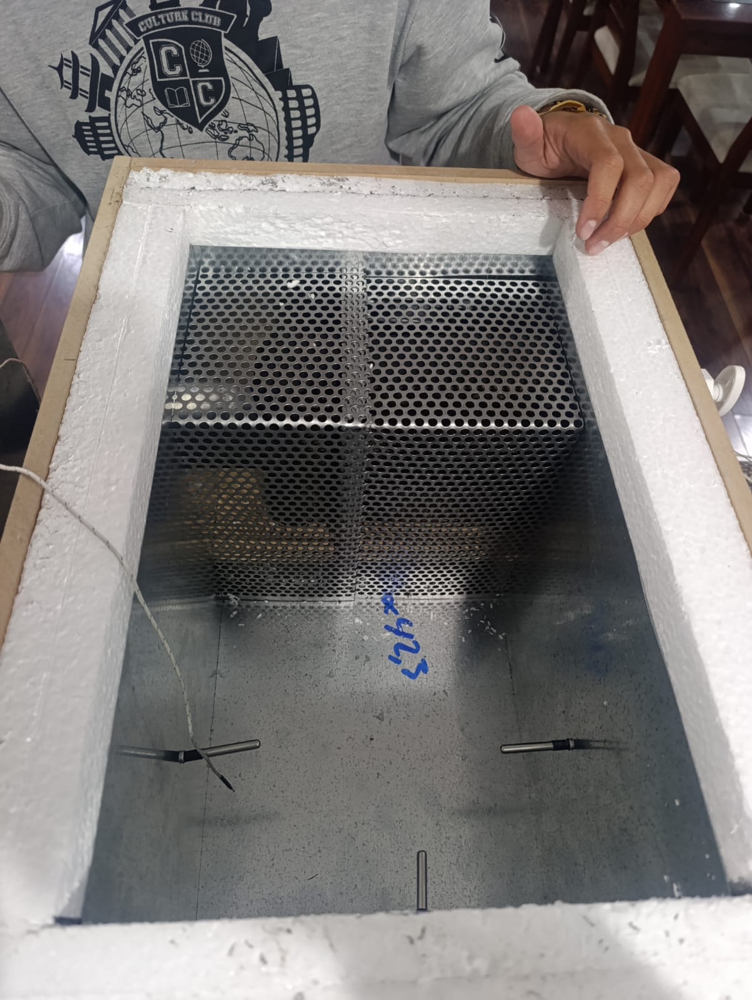
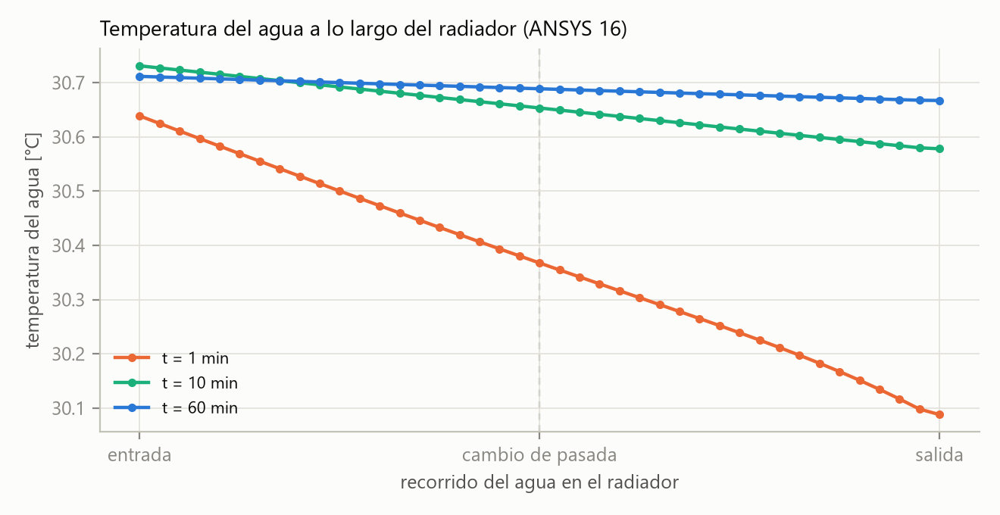

Proyecto de ingeniería
Cámara
Climática Calentada con un Intercambiador Agua–Aire
Diseño, instrumentación y validación de un prototipo con un volumen de ensayo mínimo de 1000 in³.

- Volumen libre
- 1156 in³ Mínimo de 1000 in³
- Tiempo hasta +10 K
- 17.9 min Límite de 60 min
- Tiempo en banda de ±1 K
- 22.0 min Mínimo de 20 min
Vista general
Del modelo al laboratorio
Una cámara de calentamiento indirecto que transfiere calor del agua al aire a través de un radiador de cobre de dos pasadas. La zona de ensayo queda libre de componentes.





- Dimensiones útiles
- 265 × 260 × 275 mm
- Pérdidas con el ventilador encendido
- UAreal = 1.59 W/K
- Intercambio agua–aire
- K = 4.54 W/K
Diseño térmico
La cámara y su aislamiento
El recinto separa el volumen de ensayo del compartimento técnico. El análisis usa las condiciones de Cajicá, a 74.14 kPa.
Geometría, Capas de la Pared y Hermeticidad (D1, M1, M2)
- Criterio geométrico: Aunque la esfera reduce el área 19.4 %, se eligió un prisma rectangular casi cúbico para facilitar la fabricación con lámina y tablero comercial y el ajuste de juntas planas.
- Volumen dividido en dos zonas:
- Caja de ensayo útil: 265 × 260 × 275 mm = 0.018948 m³ (1156 in³), superando el mínimo obligatorio de 1000 in³.
- Compartimento del radiador: 150 × 260 × 275 mm (separado por reja metálica perforada en L que protege al usuario y deja circular el aire).
- Pared compuesta (adentro → afuera): Lámina de aluminio de 0.95 mm (distribuye el calor y protege el EPS) + Poliestireno expandido (EPS) de 40 mm (k = 0.038 W/m·K) + Cascarón estructural de MDF de 15 mm (k = 0.13 W/m·K).
- Efecto altitud de Cajicá (2558 m, 74.14 kPa): La densidad del aire seco a 30 °C baja a 0.852 kg/m³ (27 % menor que a nivel del mar) y el agua hierve a 91.5 °C.
Balances de Masa y Energía, UA y Masa Térmica (D1)
ṁw,ent = ṁw,sal = ρw·V̇w = 0.0288 kg/s (a 1.76 L/min)
maire = ρaire·Vint = 0.852 × 0.0297 = 0.0253 kg (ṁaire = 5.44×10⁻³ kg/s)
Rtotal = Ri (0.114) + Ral (0.00001) + Reps (1.569) + Rmdf (0.138) + Ro (0.141) = 1.928 K/W
UA = 1 / Rtotal = 0.519 W/K (el EPS aporta el 81.4 % del aislamiento).
Diseño sin infiltración: 5.70 W a +11 K. El ensayo sin ventilador dio 0.56 W/K (error del 7 %). Con el ventilador encendido, la sobrepresión interior provoca fugas por la junta de la tapa sin empaque y eleva la conductancia global medida a UAreal = 1.59 W/K (≈17.5 W a +11 K).
Cef = ∑(m·c·f) = 6911 J/K (Aluminio 19.5 %, Radiador+agua 33.0 %, MDF 28.1 %, Aire 0.4 %)
Cef·(dT/dt) = Q̇hx − UA·(T − T∞). Con UA de diseño, τ = Cef/UA = 222 min.
En el cálculo de diseño, para +11 K en 20 min: Q̇req = 66.2 W. En sostenimiento: Q̇mant = 5.70 W.
Durante la primera hora, el MDF exterior apenas se calienta y el radiador recibe calor del agua. La capacidad térmica efectiva identificada del lado del aire es Ca = 3.8 kJ/K (3800 J/K).


Intercambiador
Del agua caliente al aire
Una bomba recircula el agua entre el tanque y el radiador. El método ε–NTU estima cuánto calor llega al aire de la cámara.
Radiador de Cobre (D2)
Núcleo automotriz de calefacción (Toyota) de 215 × 170 × 50 mm:
- 29 tubos planos de latón/cobre en 2 pasadas (15 ida + 14 retorno).
- Área de aletas: Aaleta = 1.421 m². Eficiencia de aleta ηf = 0.981 con el ventilador instalado y 0.938 con el caudal de diseño.
- Área de tubos: Atubo = 0.267 m² en el exterior de los 29 tubos. Área total del lado del aire: 1.688 m². Área mojada interna Amojada = 0.258 m².
- Lado del agua: La correlación de Shah–London para ducto plano de 17.5 × 1.6 mm da Nuw = 7.54 y hagua = 1534 W/(m²·K).
- Conductancias con el ventilador instalado: Con un factor de área activa fv = 0.166, UAagua = 65.7 W/K y UAaire = 13.8 W/K. Para el aire, Nuaire = 4.93 y haire = 50.1 W/(m²·K).
Punto de Operación ε–NTU (D2, M3)
Punto de operación en Cajicá (74.14 kPa) con el ventilador axial de 92 × 92 × 25 mm instalado (12 V DC, 0.36 A, 4.3 W).
Caire = Cmin = 5.23 W/K
Cagua = Cmax = 109.7 W/K (a 1.6 L/min)
UAhx = 11.4 W/K → NTU = 2.18
ε = 0.870 → K = ε·Cmin = 4.54 W/K
En el ensayo preliminar del 14 de noviembre se identificó K ≈ 4.65 W/K. En la prueba final, con las temperaturas de entrada y salida del agua y el caudal aforado, se midió Kmed = 4.03 W/K.
Tanque, Resistencia y Bomba (M4)
- Tanque: Caja Tayrona No. 2 Alta de Plásticos Kendy (polipropileno, 6.5 L), con 4.4 L de agua y Ct = 18.3 kJ/K. Sin aislamiento exterior, su conductancia de pérdidas es UAt = 2.67 W/K (≈41 W hacia el cuarto cuando el agua está a 37.8 °C).
- Resistencia: Tubular en U de acero inoxidable, de 700 W nominales a 110 V. En la línea de 120 V del laboratorio disipa 833 W (6.94 A).
- Circuito hidráulico: Bomba de diafragma R385 (12 V DC, 0.35 A, 4.2 W), ≈1 m de manguera de silicona de 6 mm de diámetro interno y codos reductores de 17 a 6 mm. A 1.6 L/min, la pérdida de carga calculada es 3.74 kPa (0.38 m.c.a., v = 0.94 m/s, Re = 8138). Con el caudal aforado de 1.76 L/min, la velocidad es 1.04 m/s y el tanque recircula por completo cada 2.5 min.


Control
Medición y control en cascada
Siete sondas DS18B20 siguen la temperatura del aire, del agua y del ambiente. El controlador PI ajusta la consigna del agua para limitar el sobreimpulso.
Por qué Control en Cascada PI + On/Off (C1, C2)
Con las pérdidas reales con ventilador (UAreal = 1.59 W/K) y el acoplamiento teórico (K = 4.54 W/K), mantener el tanque a la temperatura fija de diseño de 30.65 °C habría estabilizado el aire en +9.1 K, por debajo de los +10 K exigidos. El control en cascada ajusta la temperatura objetivo del agua según el error del aire.
e = To − Taire, con To = Tamb,ref + Δ y Δ = 11 K.
T*w = To + D + R·e, con saturación en [To, Ttope] y Ttope = min(To + 8 K, 50 °C).
dD/dt = (R / Ti) · e = e / (1200 s), con R = 0.6 y Ti = 720 s. D(0) = 3.0·Δ/11 = 3.0 K y D ∈ [0, 8 K].
El firmware solo integra cuando la consigna calculada está entre ambos topes y |Tw − T*w| < 1.5 K.
La resistencia se enciende si la temperatura de entrada del agua es inferior a la consigna saturada menos 0.2 K y se apaga si supera esa consigna más 0.2 K.
Sensores 1-Wire, Acondicionamiento y Potencia (E1–E4)
- 7 sondas digitales DS18B20 (E1): Bus único 1-Wire en
GPIO 4con pull-up de 5 kΩ a 3.3 V (resolución 12 bits = 0.0625 °C, tiempo de conversión asíncrono 750 ms). 4 en el aire interior, 1 en ambiente, 1 en agua de entrada (tanque) y 1 en agua de salida. - Filtro de 3 etapas + Calibración (E2):
- Verificación CRC de 8 bits y descarte de −127 °C y 85 °C.
- Rechazo de picos: se descartan saltos > 3 °C en 1 s.
- Filtro de Kalman escalar en cada sonda: Q = 0.01 y Rruido = 0.04.
- Calibración en frío (E2): El firmware resta los desfases de las cuatro sondas de aire (+0.28, −0.35, −0.09 y +0.16 K). La dispersión en frío baja de 0.63 K a 0.12 K.
- Conmutación y Potencia (E3, E4): ESP32-S3-N16R8 gobierna módulo optoacoplado de relés SRD-05VDC-SL-C (lógica invertida:
GPIO 5Bomba,GPIO 6Resistencia,GPIO 7Ventilador). Línea AC de 120 V aislada de la fuente regulable BAKU BK-1502D+ a 12 V. La bomba consume 0.35 A (4.2 W) y el ventilador 0.36 A (4.3 W), para un total de 0.71 A (8.5 W DC). - Alarmas del firmware: Agua por encima de 50 °C, desvío de consigna del aire fuera de ±1 °C en régimen, dispersión entre las cuatro sondas de aire superior a 2 °C y fallo o desconexión de sonda.
Diagrama de Bloques del Control en Cascada Implementado en el Firmware


Simulación
De las ecuaciones a ANSYS
Seis modelos en Python y ANSYS permiten comparar las pérdidas, el calentamiento de las paredes y el comportamiento del sistema acoplado.




Por qué el modelo distribuido reproduce el ensayo
Con las pérdidas medidas, el modelo concentrado tarda 35.5 min en alcanzar +10 K (26.6 min con UA de diseño). Desde t = 0 asigna al sistema los 6911 J/K de capacidad térmica efectiva, incluidos las paredes y el MDF.
El modelo distribuido resuelve 12 capas de EPS y usa 3.8 kJ/K para la respuesta rápida del aire y el forro interior. Durante los primeros 20 min, la onda de calor aún no llega al MDF exterior. El resultado es 18.0 min hasta +10 K, frente a 17.9 min en el ensayo.
Validación
La prueba final
En el ensayo del 22 de noviembre de 2026, la cámara alcanzó el salto térmico de +10 K en 17.9 min y permaneció 22.0 min en la banda de tolerancia. En la primera prueba, con arranque en frío, alcanzar +10 K tomó 24.6 min.
Temperatura sobre el ambiente
Curvas de referencia de la presentación anterior
- Experimental
- +10.00 K
- Simulado
- +9.97 K
- Teórico
- +10.12 K
Se conservan los 18 puntos de la versión anterior. Para las cifras definitivas, consulta la tabla de abajo. La franja marca la banda de +10 a +12 K.

| Magnitud Evaluada | Teórico (concentrado) | Simulado (distribuido) | Experimental (Prueba 2) | Error Sim. vs. Exp. |
|---|---|---|---|---|
| Tiempo hasta ΔT = +10 K [min] | 35.5 (26.6 con UA de diseño) | 18.0 | 17.9 (17.85 min) | 0.6 % |
| Tiempo continuo en banda ±1 K [min] | 4.5 (en una ventana de 40 min) | 21.9 | 22.0 (22.05 min) | 0.5 % |
| ΔT aire–ambiente media en sostenimiento [K] | +10.22 | +10.77 | +10.85 (σ = 0.25 K, desviación máxima de 0.76 K) | 0.7 % |
| Temperatura de la cámara en sostenimiento [°C] | — | 34.91 | 35.0 °C ± 0.6 K (dispersión media entre las cuatro sondas de 0.98 K) | 0.2 % |
Balance de energía experimental en la prueba 2
La resistencia consumió 122.1 Wh (439.5 kJ) en 8.8 min encendida. El factor de marcha fue 22.0 % durante toda la prueba y 13.3 % en sostenimiento.
- 54.5 % (66.6 Wh = 239.7 kJ) almacenado en los 4.4 L de agua del tanque al pasar de 21.5 a 34.6 °C.
- 21.8 % (26.6 Wh = 95.7 kJ) perdido por convección y radiación en las paredes del tanque sin aislar (UAt = 2.67 W/K).
- 16.6 % (20.3 Wh = 73.0 kJ) cedido por el agua en el radiador. Del lado del aire se midió un 14.3 % del total, del cual 2.6 puntos porcentuales calentaron la cámara y 11.7 se perdieron hacia el ambiente.
- 7.1 % (8.7 Wh = 31.1 kJ) en calor residual de la resistencia, mangueras y cierre del balance.
Equipo
Integrantes del proyecto
Responsabilidades en diseño, mecánica, electrónica y control.
| Integrante | Diseño (D) | Mecánica (M) | Electrónica (E) | Control (C) |
|---|---|---|---|---|
| 1. Valentina Cárdenas | D1. Cámara: balance de masa y energía, aislamiento, pérdidas (0.519 W/K de diseño y 1.59 W/K con ventilador), masa térmica (6911 J/K) y capacidad efectiva del lado del aire (3.8 kJ/K). | M3. Compartimento del radiador: repisa, reja perforada en L y montaje del radiador y ventilador de 92 mm. | E4. Potencia y seguridad: fuente DC de 12 V (8.5 W), línea AC de 120 V de la resistencia (833 W) y consumos. | C4. Pruebas: protocolo, ejecución y análisis de registros (+10 K en 17.9 min, 22.0 min en banda y balance de energía). |
| 2. Santiago Vega | D4. Planos y materiales: 18 piezas, ensamble y 20 planos en SolidWorks 2025, lista de materiales (BOM). | M4. Circuito hidráulico: tanque de 4.4 L con resistencia, bomba R385, mangueras y aforo de caudal (1.76 L/min). | E3. ESP32-S3 y relés: asignación de pines, módulo SRD-05VDC-SL-C y conmutación de bomba, resistencia y ventilador. | C1. Estrategia y sintonía: cascada PI + on/off (±0.2 K), consigna de aire Tamb,ref + 11 K y parámetros del firmware R = 0.6 y Ti = 720 s. |
| 3. Mariana Gil | D3. Simulación: 6 modelos en Python y ANSYS 16 (sensibilidad de malla y transitorio) y comparación. | M2. Aislamiento y sellado: EPS de 40 mm, forro de aluminio de 0.95 mm, juntas y análisis de fugas por la tapa sin empaque. | E2. Acondicionamiento y calibración: verificación CRC, rechazo de picos, filtro de Kalman y desfases en frío. | C2. Firmware: lazo de control cada 1 s, protecciones de sobretemperatura, alarmas, energía y eficiencia. |
| 4. Andrés Fonseca | D2. Intercambiador: selección del radiador y ventilador, método ε–NTU (ε = 0.870), K = 4.54 W/K teórico, Kmed = 4.03 W/K en la prueba final y caudal. | M1. Caja: corte y armado del MDF de 15 mm, caja útil de 265 × 260 × 275 mm (1156 in³) y tapa superior. | E1. Sensores: las 7 sondas DS18B20 en el bus 1-Wire (GPIO 4), direcciones ROM y ubicación espacial. | C3. Interfaces: programa de escritorio PyQt5 con gráficas y CSV, y página web móvil por Wi-Fi (192.168.4.1). |